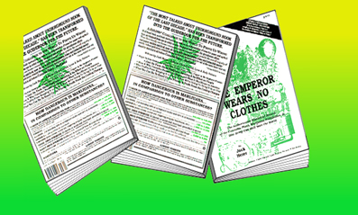

|  |
| |

illustration © Chris Peltier
by Judy Osburn
When the federal government seizes cars, boats , money, real estate and other personal property, the proceedings, are set into motion based on laws whose origins date back to medieval superstition.
These “in rem” forfeitures are a civil suit against the property itself. The property is held guilty and condemned, as though it were a personality instead of being inanimate and insentient.
Through this legal ‘personification fiction,’ the property is the defendant—and the guilt or innocence of the owner is irrelevant. By applying a civil label to forfeiture proceedings, the government sidesteps almost all the protections offered by the Constitution to individuals.
There is no Sixth Amendment guarantee of the right to counsel. Twenty days after seizure, the property is automatically forfeited, without review by a judge or a jury—unless the owner has the resources available to intervene in the proceedings.
Civil attorneys’ retainers are high, and those with knowledge in this area of law are few.
Those who are able to halt the automatic non-judicial forfeiture process find themselves in a “Through the Looking Glass” world of law, where the property is presumed guilty until proven innocent; the innocence of the owner (now claimant) is not a defense; hearsay is admissible to prove the property “guilty,” but not admissible in its defense; and the government’s claim to the property “relates back” to the time of the illegal act, so that anyone with a subsequent interest in the property is subject to the government’s prior claim of forfeiture.
This “relation-back doctrine” is used not only against unknowing purchasers and lien holders of the “tainted” property, but also against fees paid to defense counsel. Property is subject to forfeiture through its “intended use” to facilitate a drug offense, extending from the regulation of action to the regulation of thought.
Each violation of a constitutional right is then used as the basis for the destruction of another.
The violation of the Fifth Amendment’s “Innocence until proven guilty” due process standard is used to destroy the prohibition of double jeopardy. Even an acquittal of related criminal charges does not bar re-litigation of the same facts, because the defendant must furnish proof at the second trial.
Because the Supreme Court holds that the Constitution permits in rem forfeiture of property belonging to a person who is completely innocent of criminal activity and not negligent in his use of the property, lower courts reason that the Eighth Amendment’s prohibition of cruel and unusual use of excessive punishment or fines could not apply to anybody guilty of even a minor drug offense.
The right to a jury trial is automatically waived unless demand is made within the specified time. If the property was seized on navigable waters, there is no right to trial by jury.
An incarcerated claimant does not necessarily have the right even to be present at the forfeiture proceeding. If the is valued under $100,000 or is a conveyance accused of transporting contraband, the right to trial must be purchased through a ‘cost bond’ equal to 10% of the value of the property. The government retains custody of the property and is not responsible for its deterioration.
Unlike civil suits between individuals, the government as plaintiff is immune from counter-suit.
English common law of the middle ages provided for forfeiture of any object causing a man’s death. Known as a deodand, the object, such as a weapon or a run-away cart, was personified and declared tainted or evil, and forfeited to the king. Forfeitures became the Crown’s principle means of tax enforcement. Forfeiture of the estates of traitors and felons added substantially to the Crown’s domain.
Forfeitures imposed by the English Crown led to the prohibition off bills of attainder (forfeiture consequent to conviction) in the first article of the American Constitution.
The main body of the Constitution also forbids forfeiture of estate for treason. The very first Congress passed the statute, still law today, stating that “No conviction or judgment shall work corruption of blood or any forfeiture of estate.”
However, early Americans did incorporate in rem procedures under Admiralty and Maritime law, to seize enemy ships at sea and to enforce payment of customs duties.
It was not until the outbreak of the Civil War that these customs procedures were radically changed, in order to punish Confederate rebels.
Opponents of the Confiscation Act of July 17, 1862 called the use of in rem proceedings “no more than ‘hocus pocus,’ designed to avoid the Constitutional requirements of a criminal trial,” and predicted that if it were passed, “a total revolution [will be] wrought in our criminal jurisprudence...despite all the safeguards of the Constitution.”
The Act did pass, and was soon challenged.
The Kentucky State Supreme Court held it unconstitutional, stating, “These [in rem] proceedings may today be the engines of punishment to the rebels but, in the future, they may be the instruments of oppression, injustice and tyranny.”
But the Supreme Court held that, if the Act was an exercise of the war powers of government and was only applied to enemies, then it was Constitutionally allowable, in order to ensure a speedy termination of the war.
Today, the passions of the “War on Drugs” have caused Congress to once again use in rem proceedings to inflict punishment without the nuisance of the protections provided by the Constitutional Bill of Rights.
the authorized on-line version of Jack Herer’s “The Emperor Wears No Clothes”
| previous page | Appendix | next page |
|
 |
 |
 |
 |